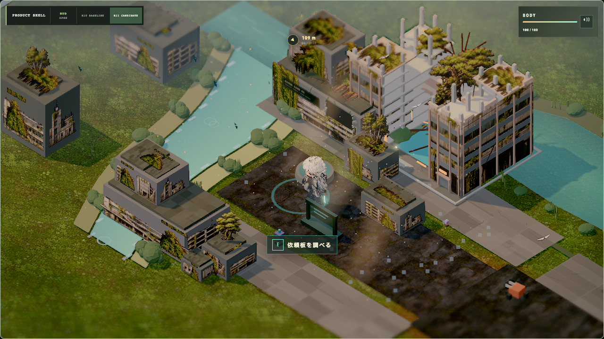
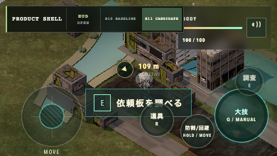

WORLD ASSET FORGE / PIPELINE CASE 01
WAF-01雨水管制塔の生成パイプライン
PIPELINE CASE / NOT PLAYABLE
RUNTIME UNMERGED / UNPUBLISHED
CANDIDATE 9fb4eed
CANDIDATE 9fb4eed
建物の意味、配置、通行領域を保ったまま、BlenderとGeometry Nodesから視覚・衝突・遮蔽用の出力を組み立てるWorld Asset Forgeの制作事例です。
掲載しているのは採択済みcandidateの実画面記録です。このページは操作demoではありません。runtime、GLB、生成sourceは未統合・未公開のまま保持しています。
- OUTPUT
- 830,684 bytes
- GEOMETRY
- 3,454 triangles
- RUNTIME
- 7 draws
- MATERIALS
- 5 materials
- ATLAS
- 1 × 512px
- AUTHORITY
- Development accepted

